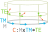

§ Connections, take 2
- I asked a math.se question about position, velocity, acceleration that recieved a great answer by
peek-a-boo. Let me try and provide an exposition of his answer. - Imagein a base manifold M, say a circle.
- Now imagine a vector bundle over this, say 2D spaces lying above each point on the circle. Call this (E,π,M)
- What is a connection? Roughly speaking, it seems to be a device to convert elements of TM into elements of TE.
- We imagine the base manifold (circle) as horizontal, and the bundle E as vertical. We imagine TM as vectors lying horizontal on the circle, and we imagine TE as vectors lying horizontal above the bundle. So something like:

- So the connection has type C:E×TM→TE. Consider a point m∈M in the base manifold.
- Now think of the fiber Em⊆E over x.
- Now think of any point e∈Em in the fiber of m.
- This gives us a map Ce:TeM→TeE, which tells us to imagine a particle e∈E following its brother in m∈M. If we know the velocity m˙∈TmM, we can find the velocity of the sibling upstrairs with Ce(m˙).
- In some sense, this is really like path lifting, except we're performing "velocity lifting". Given a point in the base manifold and a point somewhere upstairs in the cover (fiber), we are told how to "develop" the path upstairs given information about how to "develop" the path downstairs.
- I use "develop" to mean "knowing derivatives".
§ Differentiating vector fields along a curve
- Given all of this, suppose we have a curve c:ItoM and a vector field over the curve v:I→E such that the vector field lies correctly over the curve; π∘v=c. We want to differentiate v, such that we get another v′:TI→E.
- That's the crucial bit, v and v′ have the same type, and this is achieved through the connection. So a vector field and its derivative are both vector fields over the curve.
- How do we do this? We have the tangent mapping Tv:TI↦TE.
- We kill off the component given by pushing forward the tangent vector Tc(i):TI at the bundle location v(i) via the connection. This kills of the effect of the curving of the curve when measuring the change in the vector field v.
- We build [z(ti:TI)≡Tv(ti)−Cv(i)(Tc(i))]:TI→TE.
- We now have a map from I to TE, but we want a map to E. What do?
- Well, we can check that the vector field we have created is a vertical vector field, which means that it lies entirely within the fiber. Said differently, we check that it pushes forward to the zero vector under projection, so TM:TE→TM will be zero for the image of w.
- This means that z lies entirely "inside" each fiber, or it lies entirely in the tangent to the vector space π−1(m) (ie, it lives in Tπ−1(m)), instead of living in the full tangent bundle Em where it has access to the horizontal components.
- But for a vector space, the tangent space is canonically isomorphic to the vector space itself! (parallelogram law/can move vectors around/...). Thus, we can bring down the image of w from TE down to E!
- This means we now have a map z:TI→E.
- But we want a w:I→E. See that the place where we needed a TI was to produce